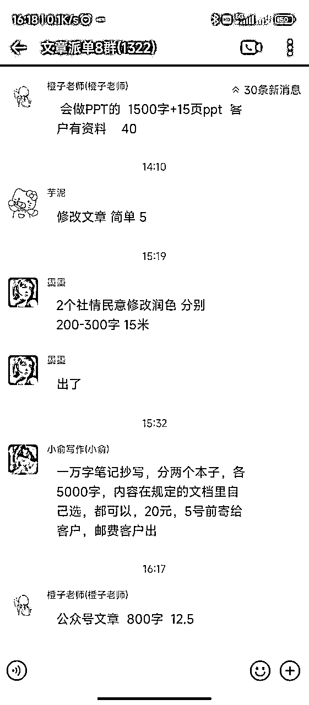
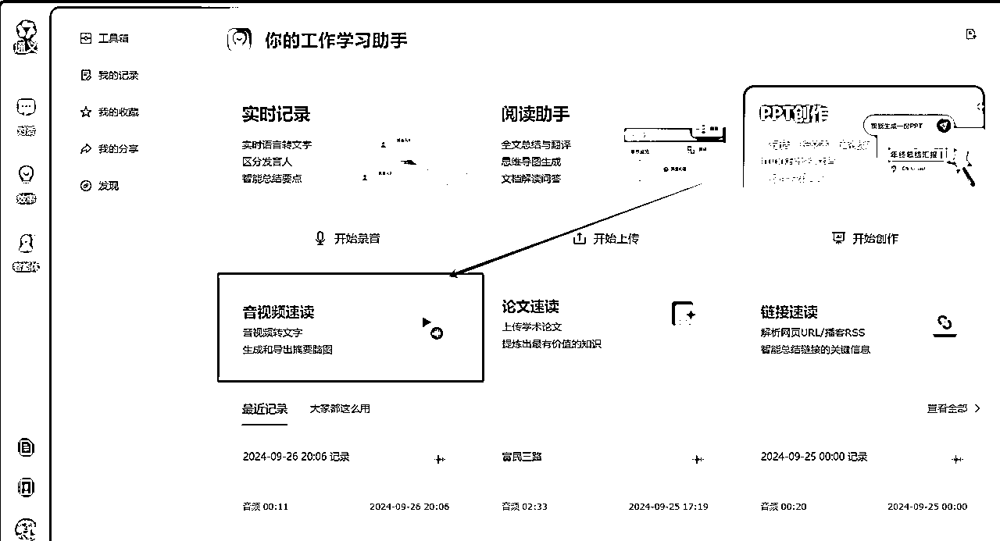
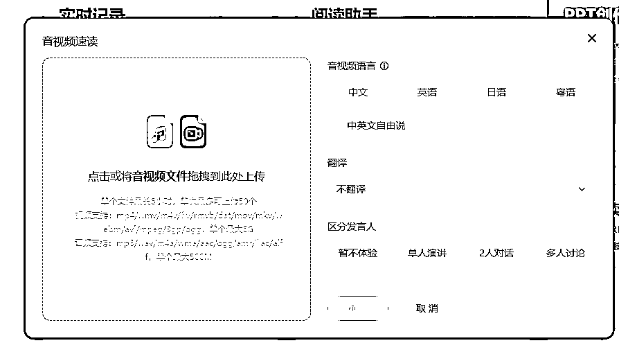
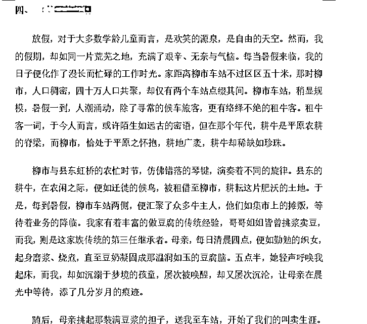

来源：https://m0mjkg40jum.feishu.cn/docx/BXs7dUigmoVNcvxpDkscfcVlngb
大家好，我是小昊，一枚02年的小白中的小白，刚毕业就接触到了AI写作项目，历时三个月，目前拿到的战绩是 仅靠AI写作在9月单月变现36828，成功完成自己养活自己的小成就。
我觉得我的成绩微不足道，但我只是觉得我目前接触的AI写作项目能让我这个毕业不想上班（找不到工作）的大学生，在当前的就业寒冬中有个火把，可以让我取暖就已经很满意了。
一般来说，只有和在某些地方水平比自己高的人交谈，而且对方能够使用你能理解的语言把你的困惑解释清楚透彻，这样的交谈才会感觉受益良多，但是这种属于能力强的人在向下兼容~
如果双方知识体系差距太大，或者他无法把他已经默会的各种知识和你完全交代清楚，那么你无法立刻理解他的高明，有眼不识泰山，这样的交谈其实对双方都没有很大的好处。
如果你明显看出他的水平比较差还不自知，这种交往就进入“垃圾时间”了
但是在生财社群上搜索，效率要高很多。所谓“听君一席话，胜读十年书”应当反过来，变成“广读十年书，胜听多席话”
就比如亦仁老大近期开创的专栏 #小灯塔 以及 筹备中的#超级风向标
前者的初衷 就是想帮助 更多的群友 在茫茫人生路中 指明一个方向 事物的发展都是螺旋上升的
人生路没有一条不是弯路
你看似在转弯抹角
其实都是为了更好的上山
毕竟如果是一路通向山顶的那种道路
爬起来累不说 稍不留神就会回落回原点
而我看到生财最新可能会开创的 #超级风向标 的专栏 就像是 为我这种项目小白 去见证 去学习到更多项目0-1的全经历过程，更可以帮助我们这种小白去落地实操。这个专栏太贴心了，对于我这样没有基础项目认知的大学生，也没什么判断力，碰到适合自己的项目和适合自己的指路人真的是靠运气，我依旧觉得我现在是没有这些判别能力的，而这个超级风向标，是亦仁老大对小白实操项目，选择项目最好的指明灯。
生财就好像是 在这个 遍地都是镰刀手 的时代的一朵清莲，用真诚换真诚，温暖我这种纯纯小白的心~
其实我之前并没有做过这个项目的，我大学四年的生涯，更多的是扮演韭菜的角色，混在各种社群，撸撸货，抢枪门票，抽茅台这样子赚点饭钱，烟钱~
我就是个屌丝，整天没事打打球，刷刷抖音看美女，看豪车，做着开豪车泡美女的屌丝梦。
在大三的时候，看见身边的人要不选择考研，要不选择考公，我也逐大流成为了考研大军的一员。
事实证明，如果没有自己的主见，随意的去做自己人生的关键选择，命运是不会给你好的回报的。
不出意外的话，那就是要出意外了，人生总是充满戏剧性，出成绩的时候我还在做着考研上岸的梦，心里想着该怎么装波逼，都已经计划好该怎么发朋友圈跟抖音了，准备来一条96张图的抖音。
我报考的学校才刚刚擦边进复试线，按照往年的录取情况来看，在研究生这条路上，我已经被宣告死刑。
或许每个人都需要一个节点，那个节点可以开启新的人生。
在这个基础上，我开始搜索有关的项目，一次偶然的机会我发现了AI写作这个项目，当时正值毕业季，我发现很多人都在用AI辅助生成自己的LW，我觉得这是一个很大的需求，但是我自己又研究不明白这种东西到底是什么东西，当时还是一个对AI领域认知为0的小白，甚至只知道ChatGpt很火，连他具体是用来做什么的都不知道。在得知这个情况后，我便开始逛各种AI相关的社群，并且在机缘巧合之下链接到了海盐老师。
初次接触到ChatGpt指令写作的时候，我的语文文笔是很烂的，生搬硬套的文笔（上面的内容纯纯手搓），却也能使用提示词，借助工具写出参赛水准的文章。
在第二天的时候，我在群里接到了第一个修改的单子，我当时主要突出一个莽字【莽村的莽是怎么来的！】，想着怎么招也得迈出第一步，只要自己是负责靠谱的人，干就完了！
我果断接下这个单子，还要了200的价格（其实现在真的很简单，现在来写的话半小时不到就能搞定）
这算是第一次通过写作来变现，当时我一点一点的琢磨教程，通宵写完了这个单子，但是在上交稿件的时候，最后琢磨到六点，那时候我耳边开始出现鸟叫声，偶尔通宵的人都懂那种感觉，那就是天亮了~
有了这次的写真是单子的经验，我发现给客户写单子真的不难，是之前自己想的复杂了！后面就更大胆的去接更多的单子，比如说留子的课程作业，中文的降AI等操作，仅仅加入一周的时间，就让我成功从这个项目中获得了1k的收入！
以后有机会的话 我再分享一下 英文的课程作业怎么做到0AI率 Turnitin 还有通过改变语句的结构来达到降AIGC的效果~
我在淘宝写手群混迹的那些日子，机缘巧合之下接触到了回忆录这个类型，10w字3k的价格（超级实在的 淘宝写手价格），觉得挺有意思的，在这里讲一下~
回忆录是一种关于一系列事件的记录，通常由参与其中的人撰写。与正式的历史不同，回忆录更为灵活和个人化，可以是一本描述特定人物、事件或时代的自传体文章，也可以是口述。回忆录作为一种特殊的体裁，不像史书般拘役于形式的正规或体例的完备与否，而是以作者本人的亲闻、亲见为基础。
千字200-400，大多在10w字，正常价格都是2w-4w左右，根据淘宝派给写手的价格，到手大概是在2k-4k左右的价格。
根据客户节奏，如果客户素材给的快，一天能写2w字，整体交付周期在1个月-2个月，无AI赋能大概3-6个月。
根据实测 我花在回忆录上的时间 每天大概是40min左右，而且是根据客户的节奏来撰写回忆录的内容，写作时间在AI赋能的提效下，实际上一个回忆录单子总耗费的时间是在35h左右。
从黑奴的角度出发，其实是非常夸张的效率~
序言（类似LW摘要，全文写完再回来写）
正文（客户人生经历：童年/学生时期/初入社会摸爬滚打/逐渐站稳脚跟，达到一个不错的社会地位（经济/政治），退休后老年生活）
章节/小节故事标题（根据内容取标题，标题要求文学性高一些）
插图（全部定稿后根据客户的老照片，插入相应位置，调整格式）
一般是以时间顺序进行故事叙述（不排除有的客户按照自己的叙事方式，倒序插叙等等），前后文都是小故事，无强相关性，可直接在一个对话框完成10w字，大部分情况下不需要记忆上下文。
客户要求参差不齐，有的客户可能连目录都不会给，也懒得去梳理目录，就是单纯的想到哪讲到哪，不过对我们影响不大，我们就是按一个个小故事去写，写完最后再排序也可以。
有的客户是自己写过，但不满意，转了代写，需要你根据他的文稿重新叙事并润色，这类客户是最容易交付的，因为可以直接喂文本。
大部分客户我倾向于让他们直接录音，一个小故事一个录音，用口述的方式讲给我，再用通义转成文稿喂给AI~
拥有一定社会地位和财富的中老年人，人生经历相对比较丰富，不缺钱不缺时间，就是给后辈或者亲戚朋友留个纪念。
想要深入的了解这个行业，就要先干黑奴，刷一波新手村，去深入的了解这个行业当下的规则以及玩法
这其实是一种调研的过程，在调研的过程中对这个行业建立起基础的认知，并且通过尝试AI写各种各种单子
快速筛选出自己可以去打的品类
也是为了以后去专门去做一个专项品 去做筹备~
下面纯纯黑奴单子

简单介绍一下回忆录写作的全流程：
录音 -> AI转文本 -> 直接喂给GPT输出初稿 -> 再次润色 -> 人工审稿，大致浏览一遍不要缺少故事情节和增加不存在的情节，处理不合理的地方->根据客户要求插入图片
按照上面的流程，可以关注那些地方可以提效，
举个例子：可以使用通义听悟 把客户提供的录音全部转化成文字稿，自己再确定一遍是否出现歧义~
此处附上通义网站：https://tongyi.aliyun.com/efficiency/home


很简单的两步操作，就可以快速的把十几分钟甚至更长的录音快速的转成文字稿，此时只要再简单过一遍逻辑以及思路，就可以当成投喂GPT的素材。
首先我秉持一个原则，那就是把AI当成一个小弟，他拥有的信息量 确实是我穷尽一生也学不会的
如果你不去限定他输出的范围，不去明确他生成的方向，那么就会导致一种情况 就是他的回答是很杂乱而且很泛的 但是如果你去给他施加层层框架 设定范围 那么它就会从限定条件中筛选出信息 并生成想要的结果~
如果你的问题或者任务更加聚焦一个领域，即【给GPT限定一个角色】(给它一个身份)，让GPT去cosplay(扮演)一个特定的角色，它就会只去相关领域知识库中搜素答案，答案也就更加的精准和专业。
如果你的问题更加明确，能【清晰的给GPT一个具体的任务】(你的目标是什么)，它会将注意力全部放在这一个任务上，答案会更加准确，而不是特别发散的思维，让你感觉说的不痛不痒，没什么营养。
如果你的问题中，能【加上一些限制条件】(给出县体的要求)，告诉GPT能做什么，不能做什么，它输出的答案将更加精准，更加符合你的预期。
AI世界和人类世界一样，一个好的答案来自于一个好的问题。
以上引用于生财群友 Cheese海盐的分享 https://t.zsxq.com/ii3BU 有兴趣的可以了解一下 免费开源~
基于以上的逻辑 我可以对回忆录这个品简单从以下几个问题出发考虑：
回忆录使用什么角色去写的话更合适？
回忆录主要架构框架是怎么样的？
客户希望的风格是什么样的？
需要AI具备那些最基本的素质？
…………
自己思考 从上面 “ 身份 ” “任务” “具体要求”上去拆解这个回忆录（可以横推到其他的品~）
其实你可以发现 上面的问题全部可以让AI去帮助你进行回答的
基于此前提，我做一个示范 可以先示范回忆录的序言部分应该使用怎样的提示词：
【角色】：
擅长写人物传记的作家，具有十年写作经验，精通回忆录、自传等题材
【技能】：
善于与老年人交流，耐心倾听他们的故事。
能够引导老年人回忆细节和情感。
良好的叙事能力，能够将回忆转化为生动的文字。
掌握描述细节的能力，让读者身临其境。
将零散的回忆整理成连贯的故事。
确定回忆录的主题或主线，确保叙事有条不紊。
能够理解和感受老年人的情感，传达他们的内心世界。
处理敏感话题时要有同理心。
【任务】：
1.根据客户提供的采访内容，撰写回忆录对应内容。
2.注意采访稿的内容可能会比较口语化和存在少量错别字，需要根据内容进行调整、润色。
【要求】：
根据我上传的文稿内容，撰写第一章节的第一个小故事，大概在2000字左右，并给故事取一个不超过7个字的名字。
【素材】：
##此处放录音文字稿内容
大致上按照一个结构化提示词的逻辑去进行梳理，然后再进行一些人工删减生硬的连接词
生成效果如图所示：

AI在整个流程，将录音环节 写作环节的工作量极大的进行了提效，原本交给编辑或者是写手 去手搓是需要小半年的时间才可以完成一篇回忆录的全流程的
但是自从有AI的提效之后，这个工作量就被极大程度的减轻了，局限于客户的速度，我才花了一个半月交付完毕这个单子，但实际上，我真正花在写回忆录上的时间是非常短暂的，正是因为有了AI工具优化掉许多繁琐的步骤以及有效的提示词，才完成了一篇高质量回忆录的交付~
如果你是全职干的话，就算是黑奴的单子，你一个月写三四篇 每天只需要投入四五个小时 一个月就可以实现过万的收入 这对于想赚个奶茶钱的 增加工作之余收入的人 是比较香的
并且业界对于交付速度快并且质量又高的写手资源是非常稀缺的，到时候客服会主动的把单子派给你，价格也会比黑奴高，实现双方共赢~
//题外话 因为客户群体质量非常高 所以动不动就会给你包个200块钱小红包喝喝茶哦【此处应有滑稽脸】
话不多说 感谢各位听我讲废话到这里 我就直接说一下我在这几个月的第一次做项目的感受：
最近写单子 ，了解到一个很有意思的模型 PDCA循环管理 简单说下就是（Plan - Do - Check - Action）
其实跟我们先前接触过的 实践方法论 很类似 ，即 认识 - 实践 - 结果 - 思考复盘。
不断遇到困难，解决问题，螺旋上升
如果我们分析一下，那么就可以认为有个公式 可以是这样的：
个人成长 = 实践次数 x（ 复盘质量 + 学习质量 ）/ 时间
举个例子就是：
有些人，只实践，但每次学习和复盘较差，他也可以通过多次实践来带动一定的成长。这种就是执行力超强，思考较少的人
还有一些人，光思考，不实践，结果你就会发现他其实很难成长。因为思考脱离了实践，就成了空想。
我就是属于后者，考虑到这个公式，那么就从三个因子出发考虑，怎么实现个人的快速增长？
方法一：增加实践次数
当在有限的时间内，实践循环越多，成长越快。
每个人每天24小时，但有些人会把12小时投入到实践中，有些人会挥霍掉自己的时间。
这就涉及到个人对时间的利用方面了~
方法二：获得更高的认识起点
除此之外，如果你能有一个更高的认识起点，也能加速个人的成长过程。
获得高起点的方式是：
收集信息+持续模仿
信息收集可以从互联网，也可以从亲朋好友，还可以从行业专家，各种信息来源中获取。
这也是有部分人由于家庭以及接受教育的程度，能够实现更快的成长速度。
方法三：复盘沉淀
沉淀总结自己在实践中的问题，强化对的经验，调整错的方法，争取每一次经历都能收获到更多价值。
心上学 事上练
从我的角度上出发，这次AI写作项目是一个让我在短短几个月快速得到正反馈的项目，但是经过我的思考，我想把下面的想法一并分享给大家：
对于像我这种具有以下四种特点的纯小白来讲，
1.没有做过任何尝试
2.没有太多商业思维
3.没什么用户感知力
4.想法也不是很多
这时候最该干的，就是迅速动手，先把手弄脏再说，过程中遇到问题解决问题。
看谁火，就抄谁。
看谁赚钱，就抄谁。
没有做过任何尝试的时候，你的能力范围可能是0~20
一个能力范围60~80的人，跟你说的事情，你是根本无法理解的
因为没有经历过，也就不可能会有什么感受。
只是心里觉得，他说的挺对，然后就没有然后了
当你真正经历过的时候，你会结合着之前失败的经历去思考，这时候更容易凌空开窍，会有那种突然间的醒悟:原来之前是这里没做对!
就像一个人，上来连10以内加减法都没做过，你告诉他世界都是四则运算，你应该怎么怎么做，这其实是不合理的，
很多人觉得”我应该提高成功率“，我想说的是，提高成功率的方式我认为只有2种:
1.跟着你认为懂的人干，无脑听取建议，先做一遍，然后去思考他为什么会这么建议思路是什么，而不是上来就选择质疑
2.当你有了能力之后，你会开始有自己的判断，这时候开始去结合别人的信息源，去思考，去判断这个链路可不可行，再去实践！
这个道理就像是 一年级的学生去问六年级的学生，怎么在三年级的考试中拿到满分？
六年级的学生只能回答把你当下能做的事情先做好，提高准确率。
除此之外 别无他法~
如果你想跳级，你也得先打牢基础！
堆量是最快让自己进步的方式，没有之一。
然而堆量并不是你想到什么做什么，最好的思路是别人做成功了什么，你去做什么。
举个例子：前一段时间很火的黑神话悟空一样，我之前从未接触过类似的游戏，这就导致我会卡在蓝色大头那里，打了十几遍打不过去，然后我就去B站找了相关攻略看，回来之后按照博主的思路，打法去进行操作，最后两遍就可以打过，后面我就学聪明了，照搬着游戏博主的思路去打，基本上第一大章节没有能卡很久的BOSS怪。
但是如果按照我自己的方式去打，那我可能打了好多遍过不去之后就放弃了。
所以说：最快的学习，是模仿。
这就是我现在认为我们第一次尝试项目的小白想要快速成长的关键，通过大量模仿来提升能力，同时进行学习。
有时候你自己都不懂为什么做了一个小项目会成功，但你做的多了就会有感觉了，这也是一个打怪的过程，
通过不断的积攒经验，升级，你就能面对以前没有办法去做的事情！
最后借取硅谷王川老师的一个推 共勉！祝在座的诸君早日实现自己的”小目标“！